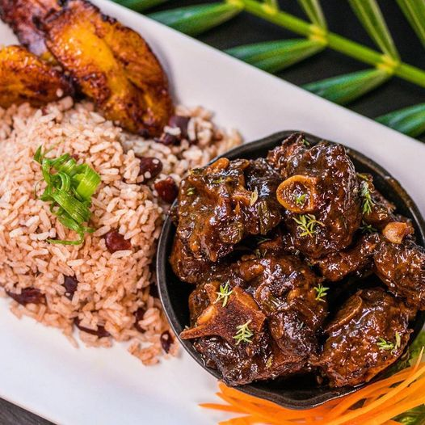
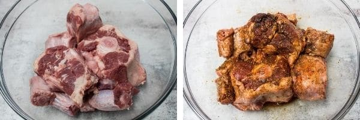
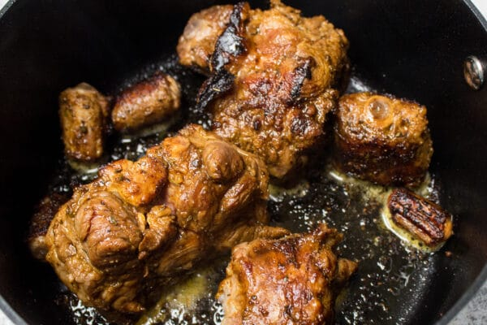
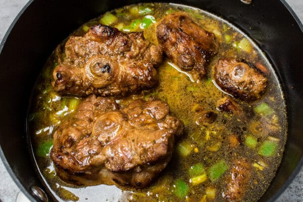

Jamaican Oxtail
Description
This amazingly rich and flavorful beef oxtail recipe is my best recreation from visiting a Sandals resort in Jamaica on vacation! I absolutely loved the flavors and couldn't pry every detail from the chef, but have managed to fill in details quite deliciously!
Since then, my family enjoys this very fragrant dish wholeheartedly whenever it is made! I have to say that the anticipation while it is cooking is, by all appearances ( judging from my daughter ) practically irresistible!
Ingredients
- 2 ½ lb beef oxtails (rinsed, dried, and trimmed of excess fat)
- 1 tablespoon Worcestershire sauce
- 1 tablespoon soy sauce
- 1 tablespoon brown sugar
- 1 tablespoon salt
- 2 teaspoon garlic powder
- 1 teaspoon pepper
- 1 teaspoon paprika
- 1 teaspoon browning sauce
- ½ teaspoon ground cayenne pepper
- 2 tablespoon vegetable oil
- 2 medium carrots (sliced)
- 2 ribs celery (sliced)
- 1 medium yellow onion (chopped)
- 1 jalapeno pepper (chopped)
- 1 tablespoon garlic (minced)
- 3 cups beef broth
- 1 bunch thyme
- 1 bay leaf
- 1 16 oz can butter beans (drained and rinsed)
Steps
-
Prepare your oxtail by rinsing and patting dry with paper towels. Place them into a medium sized mixing bowl, then sprinkle with Worcestershire sauce, soy sauce, brown sugar, salt, garlic powder, pepper, paprika, browning sauce and cayenne pepper. Toss to coat thoroughly.

-
Heat a large pan or Dutch oven over high heat with the vegetable oil. The oil should shimmer, and be just at the point of smoke. Sear the seasoned oxtail in the heated oil for about 3 minutes, or just until the meat gets a golden brown coloring. Transfer the browned oxtail to a plate and set aside.

-
Reduce the heat to medium high and saute the carrots, celery, onion, pepper and garlic until softened and fragrant, about 3-4 minutes. Once softened, add in the broth, thyme and bay leaf. Bring the broth and vegetables to a slow boil and return the oxtail.

-
Cover the pan, reduce your heat to low and simmer for about 3 hours. The oxtail should be tender when done, and pulled from the bone with a fork.
-
When the oxtail is done, remove the lid from your pan and increase the heat to medium high again. Add the rinsed butter beans and allow the broth to simmer off and thicken your oxtail gravy for about 5-10 minutes. Stir frequently while reducing, and adjust your heat as needed to prevent burning.
-
Once thickened slightly, remove the oxtail from heat and serve your Jamaican oxtail over rice immediately.